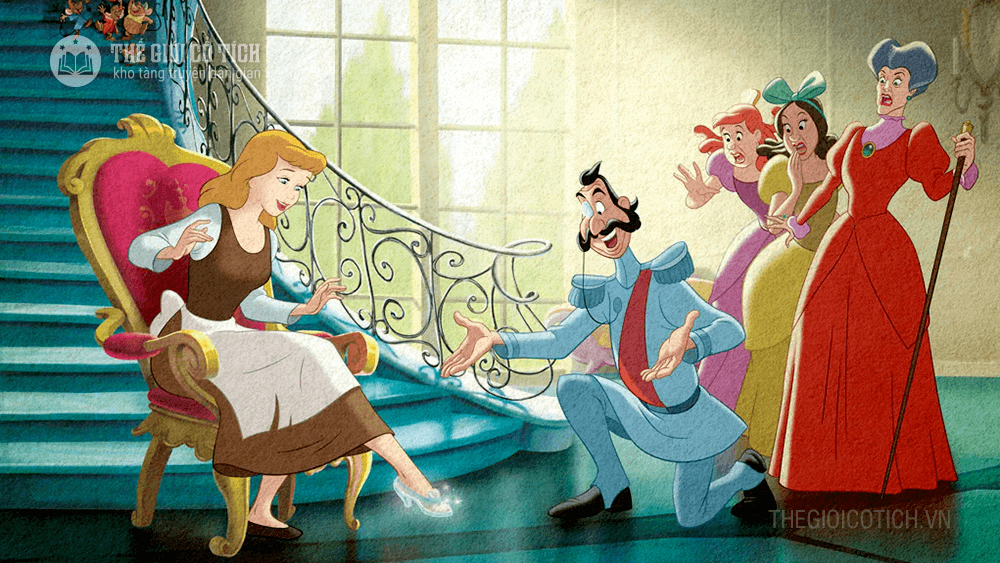

Mấy ngày sau, chàng sai lính đi rao khắp nới loan báo[22] cả nước biết: cô gái nào ướm chân đi vừa chiếc giầy hoàng tử nhặt được thì sẽ được chàng cưới làm vợ. Các cô gái trong nước đủ các hạng người đều xin ướm thử: từ các thiếu nữ con nhà giàu sang đến con gái các quan lớn nhỏ ai cũng hi vọng được làm vợ hoàng tử, nhưng chẳng cô nào ướm vừa chiếc giầy nhỏ nhắn xinh xắn đó. Cả hai cô em Lọ Lem cũng đành buồn rầu, thất vọng.
Ông bố Lọ Lem ngắm nghía mãi chiếc giầy, chợt bảo cô bé Lọ Lem ướm thử xem sao thì quả nhiên chân nàng đặt vào chiếc giầy vừa vặn như khuôn đúc, và làm cho chiếc giầy đẹp lên bội phần. Mọi người càng sửng sốt hơn khi thấy Lọ Lem rút trong túi áo ra để xỏ thêm vào chân kia một chiếc giày thứ hai giống hệt chiếc giày ướm thử này.